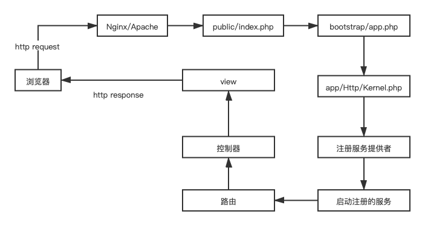

Laravel 是一个强大的PHP框架，当您学习laravel框架时，Laravel 请求生命周期是最好的起点。本文将介绍在Laravel中一个HTTP 请求从接收到响应之间发生了什么。对请求生命周期的深入研究将有助于我们理解 Laravel 结构。（基于Laravel 8）
请求生命周期有不同的术语，如自动加载器、内核、服务提供器、调度请求和路由等。一旦您详细了解了所有术语，您将对该框架有更多的理解，并且可以随心所欲地扩展不同的功能。

加载项目依赖，创建 Laravel 应用实例
Laravel 应用程序的所有请求的入口点都是 public/index.php 文件。所有请求都由你的 web 服务器（Apache/Nginx）配置定向到此文件。那个 index.php 文件不包含太多代码。相反，它是加载框架其余部分的起点。
# 1、加载项目依赖
require __DIR__.'/../vendor/autoload.php';
$app = require_once __DIR__.'/../bootstrap/app.php';该 index.php 文件将加载 Composer 生成的自动加载器定义，然后从 bootstrap/app.php 中检索 Laravel 应用程序的实例。
bootstrap/app.php:
<?php # 2、创建应用实例
$app = new Illuminate\Foundation\Application(
$_ENV['APP_BASE_PATH'] ?? dirname(__DIR__)
);
# 3、完成内核绑定
$app->singleton(
Illuminate\Contracts\Http\Kernel::class,
App\Http\Kernel::class
);
$app->singleton(
Illuminate\Contracts\Console\Kernel::class,
App\Console\Kernel::class
);
$app->singleton(
Illuminate\Contracts\Debug\ExceptionHandler::class,
App\Exceptions\Handler::class
);
return $app;
之后，它将引导 Laravel 框架使用并生成应用程序实例。
public/index.php：
# 4、接收请求并响应
$kernel = $app->make(Kernel::class);
// 处理请求
$response = tap($kernel->handle(
// 创建请求实例
$request = Request::capture()
// 发送响应
))->send();
$kernel->terminate($request, $response);一旦应用程序实例生成，传入请求将由内核处理。
接下来，传入请求被发送到 HTTP 内核还是 Console 内核，具体取决于进入应用的请求类型。这两个内核充当所有请求流经的中心位置。现在，让我们只关注 HTTP 内核，它位于 app/Http/Kernel.php 中。
HTTP 内核扩展了 Illuminate\Foundation\Http\kernel 类，该类定义了一个将在执行请求之前运行的 bootstrappers 数组。这些引导程序用来配置异常处理、配置日志、检测应用程序环境 ，并执行在实际处理请求之前需要完成的其他任务。通常情况下，你不需要在意这些配置。
HTTP 内核还定义了一个 HTTP 中间件列表，所有请求在被应用程序处理之前必须通过这些中间件。这些中间件处理 HTTP 会话的读写、确定应用程序是否处于维护模式、验证 CSRF 令牌等。我们接下来会做详细的讨论。
HTTP 内核的 handle 方法的签名非常简单：它接收 Request 接口并返回 Response 接口。把内核想象成一个代表整个应用程序的大黑匣子。向它提供 HTTP 请求，它将返回 HTTP 响应。
通过配置中间件和其他功能，HTTP 内核还加载服务提供者。
最重要的内核引导操作之一是为应用程序加载 service providers。应用程序的所有服务提供程序都在 config/app.php 中的 providers 数组。
Laravel 将遍历这个提供者列表并实例化它们中的每一个。实例化提供程序后，将对所有提供程序调用 register方法。然后，一旦注册了所有提供程序，就会对每个提供程序调用boot 方法。
服务提供者负责引导框架的所有不同组件，如数据库、队列、验证和路由组件。基本上，Laravel 提供的每个主要功能都是由服务提供商引导和配置的。由于它们引导和配置框架提供的许多特性，服务提供者是整个 Laravel 引导过程中最重要的部分。
您可能想知道，为什么在对任何服务提供者调用 boot方法之前都要调用每个服务提供者的 register 方法。答案很简单。通过首先调用每个服务提供程序的 register 方法，服务提供者可能依赖于在执行 boot 方法时注册并可用的每个容器绑定。
服务提供者是引导 Laravel 应用程序的关键。应用程序实例被创建，服务提供者被注册，请求被交给引导的应用程序。真的就是这么简单！
牢牢掌握 Laravel 应用程序如何通过服务提供商构建和引导是非常有价值的。您的应用程序的默认服务提供者存储在该app/Providers目录中。
默认情况下，AppServiceProvider是空的。此程序是添加应用程序自己的引导和服务容器绑定的好地方。对于大型应用程序，您可能希望创建多个服务提供者，每个服务提供者为您的应用程序使用的特定服务提供更精细的引导。
一旦应用程序被引导并且所有服务提供者都被注册和引导，请求将被移交给路由器进行调度。
应用程序中最重要的服务提供者之一是 App\Providers\RouteServiceProvider。此服务提供程序加载应用程序的 routes 目录中包含的路由文件。
路由器将请求发送到路由或控制器，并运行任何路由特定的中间件。
中间件为过滤或检查进入应用程序的 HTTP 请求提供了一种方便的机制。例如，Laravel 包含一个这样的中间件，用于验证应用程序的用户是否经过身份验证。如果用户未通过身份验证，中间件将用户重定向到登录页。但是，如果用户经过身份验证，中间件将允许请求进一步进入应用程序。一些中间件被分配给应用程序中的所有路由，比如那些在 HTTP 内核的 $middleware属性中定义的路由，而一些只被分配给特定的路由或路由组。您可以通过阅读完整的 中间件 文档来了解更多关于中间件的信息。
如果请求通过了所有匹配路由分配的中间件，则将 HTTP 请求定向到控制器或通过省略控制器直接返回视图或响应
控制器 app/Http/Controllers/ 执行特定操作并将数据发送到视图。
视图 resources/views/ 适当地格式化数据，提供 HTTP 响应。
一旦路由或控制器方法返回一个响应，该响应将通过路由的中间件返回，从而使应用程序有机会修改或检查传出的响应。
通常，不会只从路由操作中返回简单的字符串或数组。而是返回完整的 Illuminate\Http\Response 实例或视图。
Response 实例派生自 Symfony\Component\Http\Foundation\Response 类，它提供了许多构造 HTTP 响应的方法。
最后，一旦响应通过中间件传回，HTTP 内核的 handle 方法将返回响应对象，并且index.php文件对返回的响应调用 send 方法。send 方法将响应内容发送到用户的 web 浏览器。
至此，我们已经完成了整个 Laravel 请求生命周期的所有步骤！